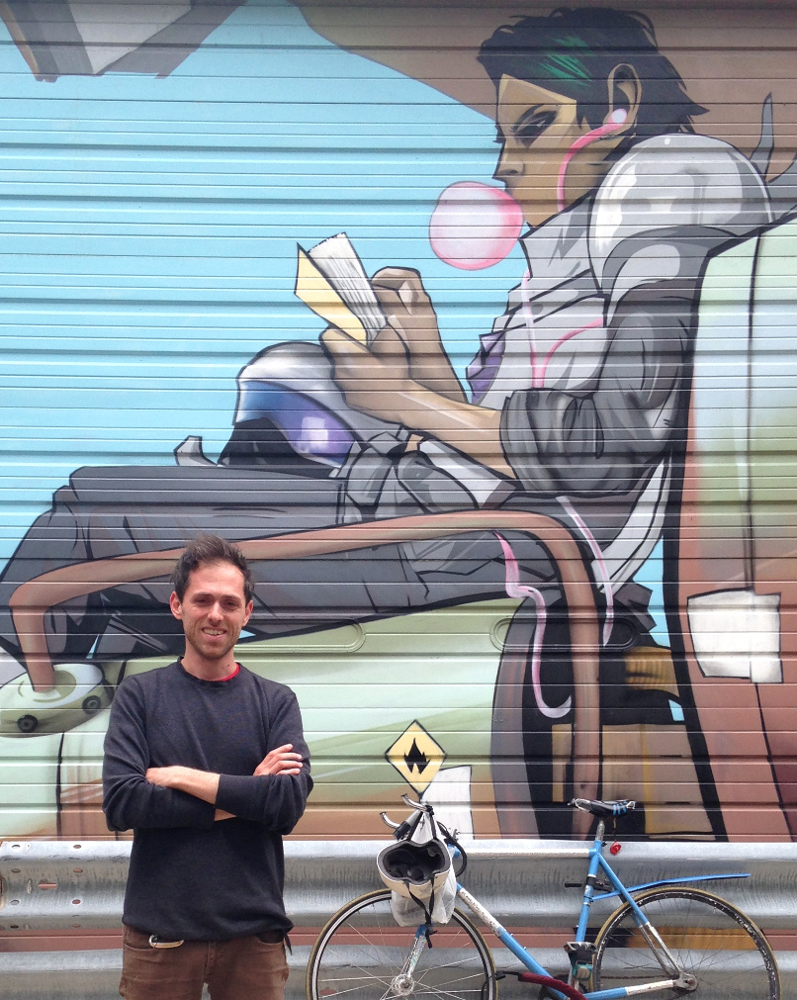

I'm a machine learning developer /quant currently working at Bank of America (contract) in a Global Risk financial crimes unit.
I previously worked at KeyBank in Model Risk Management. Before that I worked as model developer at Bank of America and Verisk Analytics.
My background is in quantitative modeling and computational science with applications in financial crimes prevention, market risk, valuation, model validation, and geophysical risk.
In 2017 I worked with researchers at the Institute for Environmental Science and Policy of the University of Illinois at Chicago developing novel performance metrics for urban institutions. From 2015-2017 I was a postdoctoral researcher at the Maritime/Coastal Disaster Section of the Disaster Prevention Research Institute at Kyoto University, developing multi-scale models to simulate coastal flooding caused by typhoons.
Here is my resume (updated 2025). Please contact me if you'd like a detailed CV.
Click Here for details of storm surge simulations for Harvey and Irma, presented September 2017 at the Chicago Python User Group (ChiPy).
E-mail: marc.kjerland at gmail
